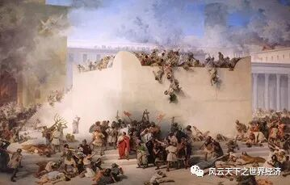

写下这些文字的是我《世界经济史》课堂上聪慧的同学们 而这个系列早在2014年首次开课时就已预约 八年后当她以如此风姿脱岫而出时 我体会到了信念被兑付后的小欣喜 深沉的经济史与年轻的思考在这里相遇 激荡出灵动的弦歌 以及渐次苏醒的思想 为这个“小风云”系列 我特意选了“总有人正年轻”这样一个名字 其含义正如你所料，这门课虽然以史为名 但是我们真正寄予其中的是未来 一万两千年世界经济史风云浩荡 恰似过去留给我们的一个巨大谜面 关于人类财富增长秘密的蛛丝马迹隐没其中 等待年轻的他们去破解 ——鲁晓东
引言
犹太民族，自诩为亚伯拉罕的后代，诞生于公元前1900年左右，出生于苏美尔人最古老的城邦乌尔。
两千多年来，从无条件忠诚于耶和华的亚伯拉罕遵照神的旨意把希伯来人[1]往西带到陌生的迦南开始，这个民族先后三次与神立定契约，历经了埃及人的奴役、长途跋涉的艰苦、族内的信仰清洗等一系列艰难险阻，最终才重新回到故土迦南；同时，在先知们的带领指引下，以色列人[2]的“一神论”——唯独忠于耶和华——这个排外性极高的信仰也牢牢地建立了起来。
“神（即耶和华）创造了世界”，是以色列人对世界最根本的看法。
苦难的民族
从“解梦能者”约瑟得到埃及法老的重用、随后他的十一个兄弟来到埃及开始，以色列民族注定四处流亡、居无定所的命运即将展开。
埃及人对以色列人几百年的压榨奴役，曾一度令以色列人失去对耶和华的信仰，也曾在沙漠里风餐露宿四十年光阴，幸而有先知摩西和他们“铁面无私”的保护神耶和华一路陪伴，把他们从被长期奴役所形成的恶习中解救出来，教给他们忠诚、克己和倔强。
但是，哪怕回到故土迦南，以色列人内部却陷入了内部分裂混战的“士师时期”，同时，外部面对强劲的菲利士人的战争也从未歇息。
公元前11世纪，以色列人终于觉醒，认识到君主统治民族的重要性。以色列王国时期，虽曾有过零散的几十年繁荣强盛，但是统一不到100年的以色列王国再次一分为二，北部的十只支派称为以色列国，剩下两支部族则组成犹太国。
公元前722年，北部的以色列国为亚述所灭，10个支派或流散异邦，或为外族同化，史称“失踪的10个支派”。而南方的犹大国则坚守着对耶和华的信仰，但当巴比伦人攻陷耶路撒冷，这两支以色列部族沦为了“巴比伦之囚”下的“犹太民族[3]”。

《耶路撒冷圣殿的毁灭》 弗朗切斯科·保罗·海耶兹作品
莫大的苦难让犹太民族内部相互倾轧的矛盾对立都消失了，犹太教会堂成为维系犹太人的一条纽带，共同的历史、共同的习俗和共同的信仰将他们联系在一起，使得他们成为一个不可分割的整体———从此，排他性成为犹太民族的一个重要特征。
犹太人只崇拜自己的神，有自己的律法，他们的穿着打扮、饮食习惯、风俗人情都与当地人不同，并且也不想融入当地社会里去，就这样特立独行地生活在世界各地。由于这种隔离的特征，犹太民族被现代学者马克斯·韦伯称犹太族为“在一个没有种姓的周边环境里的一个‘贱民[4]’民族” 。
很快，波斯帝国拯救了这个“巴比伦之囚”，犹太民族进入了繁盛的“第二圣殿时期”，思想文化得到迅速发展。然而好景不过六百年，罗马人很快将第二圣殿变成一片废墟，犹太人纷纷逃离流散。
按理来说，他们的信仰很有可能从此销声匿迹，但是在这段犹太教历史上著名的“拉比时代[5]” ，归功于那些具有献身精神的拉比们，哪怕遭遇基督教徒的驱赶和迫害，是他们传承和发展了犹太经典。正如有学者所说：当犹太人的历史走到尽头的时候，犹太教的历史开始了。
“西墙”是所罗门圣殿的唯一遗迹，亦是寄托着犹太人2000年大流散哀思的“哭墙”
随后，在漫长的中世纪[6] ，流离的犹太人逐渐把欧洲变成了自己的家园。然而，即使犹太人凭借聪明才智和经商理财的本领，形成一个富裕的中产阶级，其与众不同的生活方式使他们终究是当地人眼里的“外乡人”，受尽排挤，尤其中世纪末期，许多国家的犹太人更是面临被驱逐的命运。
这里不得不提“反犹主义”——这种根植在宗教对立源头的欧洲普遍心态，在19世纪中期达到顶峰。在“种族优越论”的煽动下，东欧和沙皇俄国对犹太人的攻击被描述为“波格罗姆”——达到毁灭程度的大屠杀，西欧各国反犹思潮愈演愈烈，正如哪里有压迫哪里就有反抗，犹太锡安主义运动爆发，犹太人与泛日耳曼民族之间的斗争势如水火。
随后二战爆发了，谁也不会想到在德国甚至诞生了奥斯维辛集中营这种灭绝人性的产物；更不会想到，六百万犹太人的鲜血终于换来了犹太人自己建立国家的梦想的实现。
在这两千年的时间长河里，犹太民族经历了大大小小的迁徙流亡和分裂重组，也出现过对耶和华信仰的彷徨和偏离；犹太人经受的是一次次人性的考验，但凡多一点软弱、少一点坚毅，多一些放纵贪婪，少一些克制坚定，犹太民族的香火恐怕将湮灭在漫长历史的汹涌波涛中。
天选之民族
在人类社会的大家庭中，犹太人是独特的成员，反犹主义者认为他们自私胆小、投机取巧，是低贱的民族；而也有人认为，犹太人聪慧好学、顽强勇敢。
二十一世纪的犹太人，在世界的金融界、奢侈品消费和一些重要产业占据着极高的地位，虽然民族人口不多，然而成就非凡，这从对犹太教育理念随处可见的吹捧中可见一斑。“以色列人如同太阳一般掠过欧洲上空：他们到来，万物复苏；他们离去，万物凋零。”犹太民族自15世纪以来命运变迁的简要历史的确支持这个论调。
我们不得不承认，新大陆的开辟与犹太人分布地点的巨变近乎一致。15~16世纪犹太人相继被驱逐出比利牛斯半岛、德国商业城市、意大利大部分城市，这些城市的经济衰退与犹太移民在时间上几似同步。而另一方面，这些犹太人的避难所荷兰、法国、英国、汉堡、法兰克福等国家和城市迅速崛起。虽说不能断定犹太人导致了某个国家的兴盛或衰亡，但是不可否认在这个时期，犹太人对于这些新兴霸主的经济发展起到了难以忽视的推动作用。
约翰一世及其后代的统治期间，对于犹太人的横征暴敛达到了一个新的高度
由于犹太人的离去而衰败的老牌商业中心安特卫普，该城市的执政长官曾向发布收回犹太人特权赦令的皇帝递交请愿书——称“安特卫普正在不断壮大，但要实现商业自主，仍需很长时间。而现在，这座城市的毁灭必将导致这个国家的毁灭，所有这些在驱逐犹太人之前必须给予谨慎考虑。”
而17世纪处在黄金时期的荷兰，充分感受到了犹太人给他们所带来的利益，为了防止荷兰犹太人移居英国，积极主动地去了解并满足犹太人的需求。一份现存于德国参议院档案馆的来自汉堡的特别报告（1733年）中这样记载着：“在日用品供应商中，犹太人统统占据了重要位置。他们令人讨厌，却又不可或缺。”
如今，犹太人俨然被冠上“最聪明的民族”称号，科学家、工程师、政治家、商业大亨、发明家的数量，占其人口的比例远远高于其他人种。犹太人也被认为是天生的高智商、高财商，因为他们每到一个地方，都可以去重新获得巨大的财富。
矛盾的遭遇：外因与内因
这个历尽磨难却又异军突起的民族如此独特，以至于我们对于这个民族所受到的矛盾遭遇在同情的同时，不由得激起探索的欲望。
一位牙买加总督在一封信中写道：“没有其他臣民可以比犹太人更能让陛下获利——他们拥有大量的货物与广阔的通信。”此处透露的信息不少，包括当地人是如何看待犹太人的特殊地位，又是如何迫切地需要犹太人的特殊地位和能力。
1. 上天所许的半世流离
犹太人广阔的分布
从西班牙对犹太人的第一次驱逐流放开始，犹太人历经几个世纪的流散，已经在不同经济生活中心扎根，并且家族生意的分支遍布世界各地，譬如洛佩斯家族、银行家门德斯家族、罗斯柴尔德家族等。
直到殖民主义大肆扩张的时期，犹太商业据点数以千计，分布分散，基督徒商行需要巨大努力才能获得的东西，犹太人仅需很小的努力就能够达到，犹太人在国际贸易、国际金融领域开展业务也是如鱼得水。
以荷兰、英国、法国、德国为代表的接收这些从西班牙流散出来的犹太人的西欧国家，无不处在经济大复兴前夕，因而他们迫切需要从犹太人广阔的国际联系站中获利，并且促成连接南北美洲的商业链条，此外犹太人控制下的公共信贷国际化也给他们的生意带来了无穷的便利。
犹太人的外来者和半公民身份
纵观犹太民族的历史，可以说是两千年的四处迁徙流亡，任何地方对于他们而言都是陌生的，而对于当地人来说他们永远都是外邦人，当地政府以半公民的态度来对待他们。
作为新来者，犹太人必须眼光敏锐、小心翼翼，集中全力获得立锥之地，在年复一年的辛勤寻觅和竭力维持中，犹太人由此被磨砺得精明能干。他们必须懂得传承所有的积累出来的经验——哪些工商业分支最为有利可图，通过什么人建立商业联系，以及用什么原则指导商业活动等。
如此下来，我们不难想象，犹太人的生意经缘何能充满如此令人叹为观止的经济理性主义智慧了。
2. 天选之子的自我救赎
如果我们要思考某个集体的历史，就绕不开对其“集体灵魂”的建构。因此，如果我们想要剖析犹太民族的历史遭遇，那么从犹太民族的特性去归纳也许是个不错的角度。
我们已经论证，犹太人的散居使得他们经营中介性质的服务性业务如鱼得水，然而不能忽视各地犹太人团结一致的事实，给国际贸易和国际信贷的成功带来了多么重要的先决条件。
如果他们像其他民族那样，个体之间相互竞争或者关系疏远，那么庞大的犹太商业帝国也绝不可能建立起来。一个民族遭受迫害和压榨，也并不构成该群体必然联合反抗、寻求出路的格局，反而这种不幸遭遇会带来道德人性的迷失与上进心的沦丧，这种现象在长期受到君主压迫的广大平民选择逆来顺受的众多历史案例中可得以证明。
因而，我们有理由推论，这个坚毅而智慧的民族必然拥有某种特殊的品质，这样的品质才能在环境的压力下成为能量再生的源泉。这一点，实际上已然被反犹、亲犹或者犹太人自身所认识到——他们都意识到犹太人具有共性。
过度的智力
“智者优于国王，有学问的私生子胜过无知的大祭司。”《塔木德》如是说。对于犹太人来说，学习是一项宗教义务，学习本身即是崇拜，无知是死罪。在犹太人的认知里，天赋的实质不是本能的表达，而被视为理性与智力的最高形式。
此外，拉比迈尔经常说，“一个人应该教会他的儿子一门干净而舒适的手艺”，这里“干净而舒适”指的便是受尊敬的脑力劳动职业。“犹太人的头脑是台精密仪器，像磅秤般精确”，勒鲁瓦·博利厄如此说道；又如强调这方面犹太特性的杰里内克指出，“希伯来语特别善于表达需要心智的活动”。
不容置疑，这项智力天赋令犹太人在譬如数学、象棋等计算工作中表现得极为突出，抽象思维、组合能力、剖析才能，让其迅速发现一个人的内在。
现代物理学之父爱因斯坦，出生于德国乌尔姆市的一个犹太人家庭
这个头脑具备如此智力的民族怀有的世界观，必定是一种与理性相一致的有序结构
这从他们的宗教里也可以窥得——与耶和华签订平等条约，拒绝一切形式主义的崇拜方式，始终相信现世的成功是耶和华神的奖励等。因此，他们在理论和实践上都是理性主义者。
这种强烈的自我意识与超群智力相结合，便会诞生出一种以自我为中心的实用理性主义，也就是说，犹太民族倾向于从目的、目标或意图去观察世界。
正如犹太人的宗教所暗示的，可以追求荣华却不能失去自制，犹太人从不在庞大的商业帝国中迷失自己，他们永远都在探索有什么用、后果如何、谁受益，他们最大兴趣是事情的结果而非事情本身。在犹太人看来，整个宇宙就是遵照某个计划而形成的，正如海涅所提出的犹太教与其他宗教之间的不同之一是：“异教徒拥有一种无尽的’过去’，它存在于世界之中并通过必要的法则随之发展；而犹太人的上帝独立于世界之外，他把这个世界创造成一种自由意志的行为。”
犹太人的目的论观点给自己带来是追求的目标，任何事物都不能阻碍他的追求，甚至可以用倔强来形容他们的坚定。
民族历史锤炼出来的灵活性、适应力
犹太人自古以来便同时表现为反抗与屈服并存，诚如勒鲁瓦·博利厄所言，“犹太人既是最顽固的又是最顺从的”。各个时期的犹太民族领袖与贤哲们是这样劝告同胞的：在放弃自身信仰就能生存时，假装接受所在国的主流信仰。也许犹太民族，真的得靠时不时”装死“来不断幸免于难。
犹太民族与现代资本主义
著名的“桑巴特命题”引起了世界对于资本主义崛起过程中犹太因素的探讨热潮。上述所探讨的犹太特性是以何种方式促使犹太人在资本主义世界占据一席之地？又是如何影响到早期资本主义萌芽的呢？
资本主义经济的发展离不开信用机制的创建。我们可以从几种信用票据的起源来探讨犹太人对此的贡献。
可转让汇票
可转让汇票最早可以追溯至威尼斯，16世纪的威尼斯法律宣布这是非法的。当时，威尼斯的证券经纪几乎完全由犹太人控制，由此相当肯定，犹太人首先使用了该种流通汇票。生意分布颇广的犹太人完全有能力使得该种业务开展的顺利进行。
现代形式的证券
古老的证券仅仅具有私人特征，也就是成员身份的一种凭证，并不存在转让自由权。而犹太人促成了证券信用关系的标准化，灵活、投机的犹太人有理由这么做。
公债
由于犹太人是欧洲诸国皇室的主要债权人，他们对于公共信贷的标准化作出的贡献势必是不可忽视的。德意志公共借贷的创立效仿了荷兰模式，极有可能是受到荷兰犹太人的影响。我们必须指出，犹太教与基督教教义在放贷问题上最大的不同，就是犹太教教义允许犹太人向异邦人放贷并收取利息。精于计算的犹太人，再加上令人放心的外邦人身份——皇室对他们给予信任 ，层出不穷的借贷模式被具有强大创造力的犹太民族创立并且标准化推广开来。
这些创新，推动着满足私人需要的金融市场发展，而要进一步刺激这个市场需求，催生了公司创建与抵押业务。罗斯柴尔德家族是开创“大规模生产证券并将其兜售给公众以盈利”该种商业模式的主要犹太家族，投机银行在各国大肆出现，类似股份制的银行将资本预付给它们自己建立的有限公司，更是支撑起了庞大的铁路建设事业。
资本主义一时间发展到了顶峰。它们推动着经济生活的商业化进程，不仅证券交易活动达到了鼎盛，工业实业的商业化也进入了快车道——犹太人借此插足了商品的生产与运输领域。
在这个早期资本主义时代，也就是犹太的人影响不断深入的时代，犹太人一度被指责为不诚实、违背法律以及惯例。在那个中世纪的阴霾仍未完全散去的时代，追逐利润、广告或者赞扬自身的商品、抢夺他人市场、超出所在区域活动的行为统统被禁止，这也意味着，竞争是完全不可能的。
犹太人就是闯入了这样一个世界，他们创造的每一步都冒犯了既有的经济原则和秩序。但是不可置疑，犹太人把“获利高于一切目标”的理念带来，这对他们来说天经地义，种种犹太人认为合法的逐利行为，在基督徒眼中成为了违法的商业行为，譬如降价销售。而从另一方面来思考，我们可以惊讶地发现，犹太人甚至在现代资本主义时代之前，就显示出了采纳现代资本主义原则的能力。
脚注
[1]
希伯来人: 希伯来人属于闪米特部落的一个分支，是犹太人的祖先，可追溯到公元前1900年左右。[2]
以色列人: 希伯来人首领雅各与天使摔跤胜出，因而被赐名“以色列”。[3]
犹太民族: “犹太民族”的称谓，是以色列人的两支部族所组成的犹大国从沦为巴比伦的阶下囚开始的。[4]
贱民: 马克斯·韦伯的《古犹太教》一书中，认为犹太人的隔离与印度贱民不同，完全是自愿的。[5]
拉比时代: 从公元70年第二圣殿被毁至公元630年伊斯兰教政府巴勒斯坦为止。[6]
中世纪: 指公元661年阿拉伯帝国建立到18世纪启蒙运动前夕，其间1000多年。
参考文献： [1]维尔纳·桑巴特. 犹太人与现代资本主义[M]. 上海人民出版社, 2015. [2]吴德玉. 犹太人:历史和文化[M]. 时事出版社, 2015. [3]张倩红, 胡浩, 艾仁贵. 犹太史研究新维度[M]. 人民出版社, 2015. [4]李晔梦. 探寻资本主义精神的犹太渊源——对桑巴特《犹太人与现代资本主义》的解读[J]. 世界历史, 2017(3):11. [5]王依依. 民族,宗教及现代经济的成长 ——《犹太人与现代资本主义》评析[J]. 山西青年, 2018(2):3.